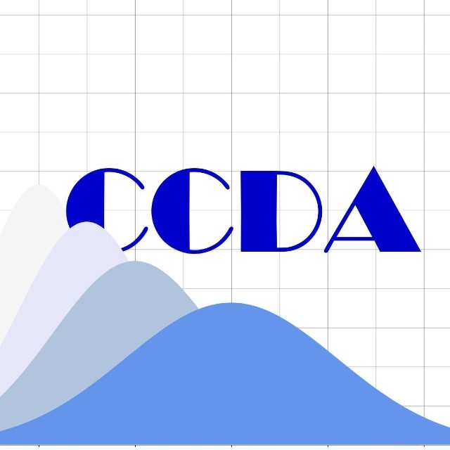
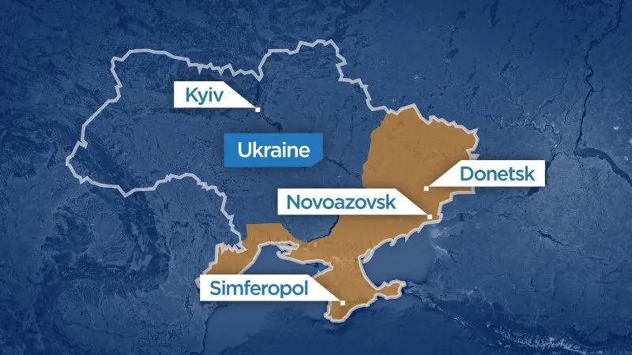
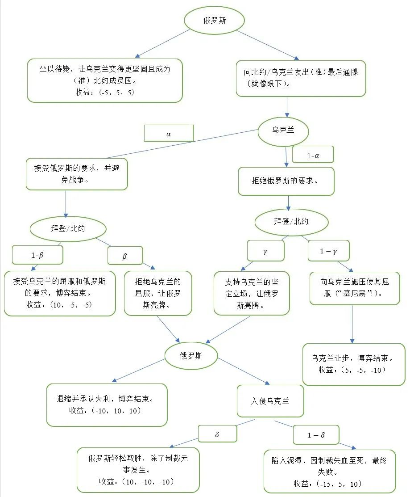
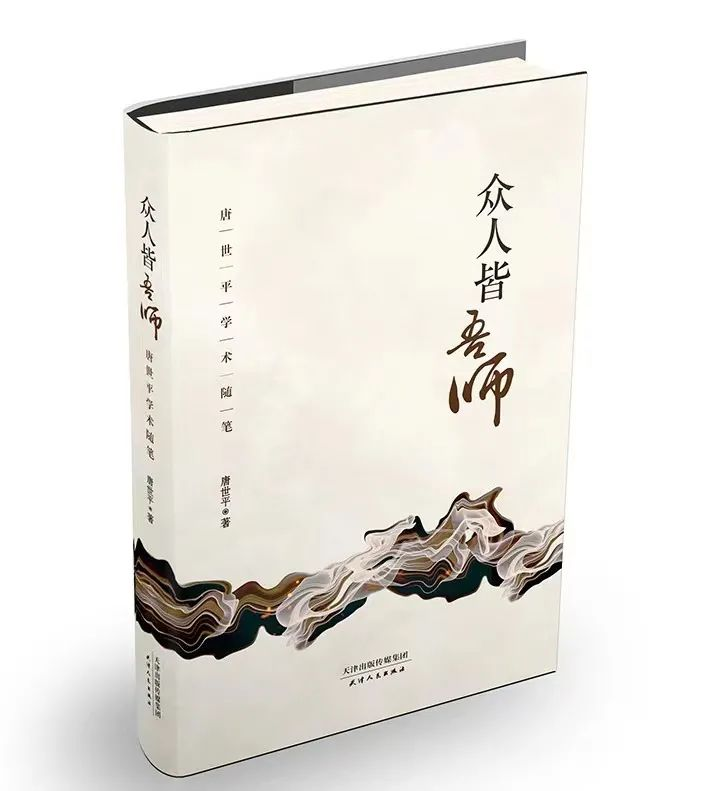
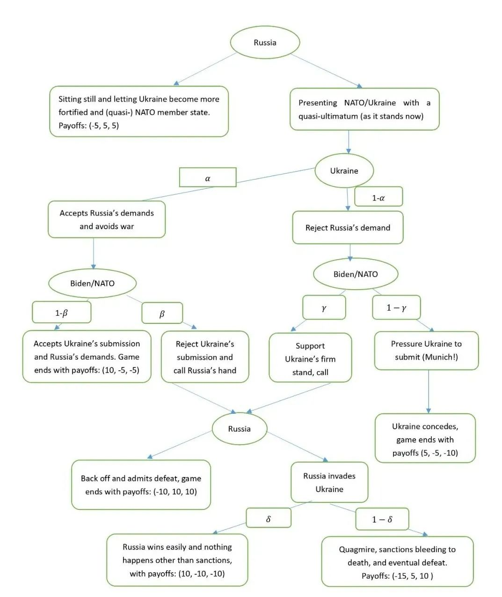

收录于合集
以下文章来源于复旦复杂决策分析中心 ，作者唐世平
 复旦复杂决策分析中心 .
复旦大学复杂决策分析中心旨在建立起一套基于广泛而丰富的历史经验和科学方法的分析框架、模型和工作软件，将前沿的社会科学研究方法与实际的学术与政策研究结合起。中心立足上海、观察世界、心怀中国，力争成为中国智库的重要“技术支持中心”之一。
- · 题记 ·
本文是唐世平教授于2022-01-25日公开预测“俄罗斯将大概率出兵乌克兰”的英文原文的中文翻译版本（建议阅读英文原文）。为了方便读者对照阅读，英文版附在中文版之后。鉴于这个包含了模型的短文并不是一个学术文章，因此行文风格并没有那么“学术”。俄罗斯出兵乌克兰之后，唐世平教授并未对文章的内容做任何实质意义上的改动。

对2022年乌克兰危机的博弈论模型 2022-1-24
唐世平（复旦大学复杂决策分析中心）
通过在俄乌边境集结10万战备部队，普京本质上是向拜登/北约/乌克兰发出（准）最后通牒。1.做出可能 （中规模到大规模）进攻乌克兰 的态势，而目标未定（也很难界定）。
2.向拜登/北约/乌克兰提出一系列要求，包括：
a) 停止北约的扩张 （没有乌克兰、格鲁吉亚等）
b) 乌克兰承认其被分裂 ：东部地区归俄罗斯所有
c) 乌克兰成为（准）中立国家 ：与俄罗斯保持友好关系3. 利用冬季（包括天然气管道和价格） 作为时间窗口：因为冻土有利于军事行动，特别是机械化作战。
通过拒绝其他选项【“坐以待毙”，让乌克兰变得更顽强且成为北约的（准）成员国】，普京表示他不打算妥协，否则对俄罗斯来说这将意味着慢性死亡和又一次羞辱。届时普京有可能已经离任。甚至情况可能更糟，比如，新的清洁能源更加普及，天然气/石油价格再次下降。
这是预防性战争的逻辑。
我用一些数字来表示这个博弈的收益（为了更容易求解和诠释）。收益：(A，B，C) = (俄罗斯，北约/拜登，乌克兰)。核心假设：
1）战争对所有参与者而言都是有代价的。
2）会有负收益，因为会有损失，包括声望和其他物质财富的损失（例如：领土）。当某一方退缩时，它的威信会受损。
3）先升级后退缩，威信（或声望）还是会受损。
4）对俄罗斯的制裁会给俄罗斯带来代价。
两个 额外的 核心假设 ：
1.这个博弈具有内在的预防性逻辑：随着普京的老去和俄罗斯在技术上逐渐落后，同时，北约不断武装乌克兰和其他近邻国家，俄罗斯即便保有核威慑力，也很难再与乌克兰和睦相处。因此，在普京80岁之前（普京生于1952年，现在70岁），每一年都有“折旧”系数（比如说0.1），共计十年。
2.拜登（和北约）可能希望普京进攻并陷入泥潭之中。而普京对此心知肚明，但他仍会采取行动，因为他不得不计算赔率（odds）。
乌克兰的决策： 极不可能屈服 （即 α=0 ）。
当乌克兰 坚定立场 时，拜登/北约极不可能向乌克兰 施压使其屈服 （这将是另一个“慕尼黑”！）。换言之， 1-γ≈0
然而，如果乌克兰 确实屈服 了，拜登/北约可能 同意避免战争 （但增加制裁）。换句话说， 1-β≥β ，或 1-β≥1/2
当乌克兰（拜登/北约） 拒绝 普京 的要求时 ，进攻的概率几乎是 肯定的 ：如果 普京退让 ，那么至少肯定是第二差的结果：可能不会有第二次机会。

解（有两个版本，一个比较简单，另一个略复杂）
简单版本
假设 α=0 且 γ=1 （这非常合理）。换句话说，我们假设乌克兰不会屈服，且当乌克兰拒绝普京的要求时，北约/拜登将（只能）支持乌克兰。情况如此时，普京的计算结果将是：
-5≤10δ+(-15)(1-δ)
或 δ≥0.4 。换句话说，只要 普京相信俄罗斯能占上风 并 保住乌克兰东部的机会有40% ， 进攻就会获得至少与其“坐以待毙”一样多的收益 （后者是很确定的，特别是从长远来看）。
** 更复杂的解**
从左边的子博弈（即当乌克兰决定屈服时），我们得到普京的潜在收益为：
10α(1-β)+10αβδ+(-15)αβ(1-δ)=10α-25αβ+25αβδ
从右边的子博弈（即当乌克兰决定坚定立场时），我们假设 γ=1 （即拜登只能支持乌克兰）来简化博弈。那么，我们得到普京的潜在收益为：
10(1-α)δ+(-15)(1-α)(1-δ)=25δ-15-25αδ+15α
结合左边的子博弈和右边的子博弈，我们得到普京的总计算结果为：
-5≤10α-25αβ+25αβδ+25δ-15-25αδ+15α
我们得到
10≤25α-25αβ+25αβδ+25δ-25αδ
或
2≤5α-5αβ+5αβδ+5δ-5αδ 解 δ ，我们得到： δ≥(2-5α+5αβ)/(5-5α+5αβ) 我们能容易就估计出，当 α 非常小（即接近0）或 β 非常大（即接近1）时，我们仍得到 δ≥0.4 。这就回到了先前的估计。当 α 和 β 都等于0.5时，我们得到 δ=0.75/3.75=0.2
简而言之，即便俄罗斯（在战场）取胜的几率只有约40%，俄罗斯也会进攻。普京已把可能的制裁考虑在内。
这个博弈的关键驱动力其实是当前局势（在展望未来时）， 对普京而言，现在进攻而非简单的等待是合理的 。换句话说，如果乌克兰和北约拒绝普京的要求，他将无路可退：因为这样一来他会显得很软弱（且损失惨重）。
唐世平签名新书



 《众人皆吾师》《观念、行动、结果：社会科学方法新论》《比较政治学》国际关系理论主题帆布袋进入“掌中星球”
《众人皆吾师》《观念、行动、结果：社会科学方法新论》《比较政治学》国际关系理论主题帆布袋进入“掌中星球”
附录I（英文版）：
A game theoretical model of the 2022 Ukraine crisis
2022-01-24
Shiping Tang (Center for Complex Decision Analysis, Fudan University)
By amassing 100,000 combat ready troops alone the Russian-Ukraine border,
Putin is essentially delivering a (quasi-)ultimatum to Biden/NATO/Ukraine. 1.
Building a posture of possible (medium to large scale) invasion of Ukraine,
with objectives undefined (and it is hard to define).2. Presenting
Biden/NATO/Ukraine with a list of demands, including: a) Freezing NATO
expansion (no Ukraine, Georgia etc.) b) Ukraine admits its divided up: East
part to Russia c) Ukraine becomes a (quasi-)neutral state: maintaining
friendly relations with Russia 3. Using the winter season (including gas
pipeline and price) as a time-window: frozen terrain facilitates military
operation, especially mechanized movements. BY rejecting the other options
(sitting still and letting Ukraine become more fortified and (quasi-) NATO
member states, Putin has signaled that he does not intend to do so: it will be
a slow death and another humiliation to Russia, and by then, Putin may be gone
(and the situations may be even worse, say with new clean energy goes up and
gas/oil price goes down again.) This is the logic of preventive war. The
game (for easier solution and interpretation), I use some numerical
denotations for payoffsPayoffs: (A, B, C)=(Russia, NATO/Biden, Ukraine). Key
assumptions: 1) War is costly to all participants. 2) There will be negative
payoffs because there will be losses, including losses of reputation and other
material possesses (e.g., territory). When one backs down, one loses
prestige. **3) Escalate and then back off incur loss of prestige (or
reputation).**4) Sanctions against Russia carry cost for Russia.
Two key additional assumptions 1. The game has an inherent preventive logic
to it: with Putin aging and Russia slowly falls behind technological advances,
and with NATO gradually arming Ukraine and other near abroad states, Russia,
even with nuclear weapon, may not have an easy time with Ukraine again. So
there is: a discount factor (say 0.1) for each year passing, before Putin
reaches 80 yrs old (Putin is now 70 yrs old, born 1952), with ten more
years. 2. Biden (and NATO) may want Putin to invade and face a quagmire
and Putin knows it. But this alone does not stop Putin from acting: Putin has
to calculate this odds.
Ukraine’s decision: very unlikely to submit (i.e., α=0). When Ukraine stands
firm, it is highly unlikely that Biden/NATO will pressure Ukraine to submit
(this will be another “Munich”!). In other words, 1-γ≈0 However, if Ukraine
does submit, there is a good chance that Biden/NATO may agree to avoid war
(but adding sanctions). In other words, 1-β≥β , or 1-β≥1/2) When Ukraine
(Biden/NATO) rejects Putin’s demands, the probability of invasion is almost
certain: backing down is at least a second worst outcome for certain if Putin
backs down: there may not be a second chance.

Solutions (with two versions, one is more simple, the other slightly more
complex)
Simple version Assume α=0 and γ=1 (very reasonable). In other words, we
assume that Ukraine will not submit and when Ukraine rejects Putin’s demand,
NATO/Biden will (can only) support Ukraine. When this is the case, Putin’s
calculation will be: -5≤10δ+(-15)(1-δ) Or: δ≥0.4. In other words, as long
as Putin believes that is a 40% chance that Russian will prevail and hold
Eastern Ukraine, he can believe that he can attack and gain as much as if he
sits still (which is quite certain, especially from the long run).
A more complex solution From the left subgame (i.e., when Ukraine decides
to submit), we have Putin’s potential gains as:
α(1-β)10+αβδ*10+(-15)αβ(1-δ)=10α-25αβ+25αβδ From the right subgame (i.e.,
when Ukraine decides to stand firm), we assume γ=1 (that is, Biden can only
support Ukraine) to simply the game. We then have Putin’s potential gains as:
(1-α)δ*10+(1-α)(1-δ)(-15)=25δ-15-25αδ+15α Combine the left subgame and the
right subgame, we have Putin’s overall calculation as:
-5≤10α-25αβ+25αβδ+25δ-15-25αδ+15α We have: 10≤25α-25αβ+25αβδ+25δ-25αδ
Or: 2≤5α-5αβ+5αβδ+5δ-5αδ
Solve for δ, we have: δ≥(2-5α+5αβ)/(5-5α+5αβ) We can easily estimate that
when α is very small (i.e., close to 0) or β is very large (i.e., close to 1),
we still have δ≥0.4. This returns to the earlier estimation.When both α and β
are equal to 0.5, we have δ=0.75/3.75=0.2 In short, Putin may invade even
though there is only about 40% chance that Russia can win (on the ground). He
has already taken the possible sanctions into account. The key driver of
this game is really that the present situation (when looking into the future),
it is rational for Putin to invade now rather than simply wait. In other
words, for Putin, he cannot afford to back off if Ukraine and NATO rejects his
demands: he looks weak (and loses much).